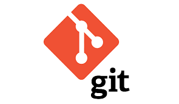

Aptitudes
Lenguajes
 C++
C++ C#
C# Java
Java Python
Python HTML
HTMLFrameworks
 .NET
.NET Django
DjangoBase de datos
 MySQL
MySQL SQL Server
SQL ServerHerramientas
Git
 GitHub
GitHub VS Code
VS CodeHola, soy Gonzalo. Trabajé durante 13 años en el área de iluminación de Telefe, hasta que decidí dar un giro profesional y me formé como Técnico Universitario en Programación en la UTN.
Durante mi formación adquirí una sólida base en lógica de programación con C, desarrollé aplicaciones de escritorio en C++, y trabajé en proyectos web utilizando tecnologías como C# .NET con SQL Server, Java con MySQL, y diseño web con HTML y CSS.
Actualmente, continúo formándome de manera autodidacta y estoy desarrollando aplicaciones web con Python y Django, enfocado especialmente en el back-end.
Busco seguir creciendo como desarrollador, aplicando mis conocimientos y experiencia para aportar valor en nuevos desafíos tecnológicos.
C++C#JavaPythonHTML.NETDjangoMySQLSQL ServerGitHubVS Code